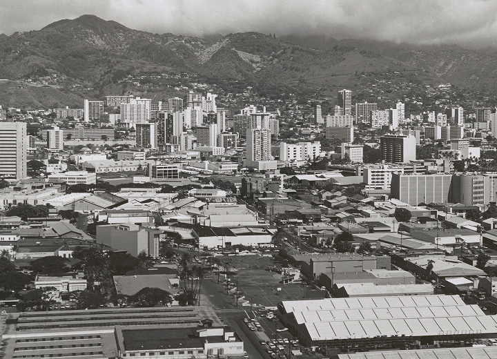
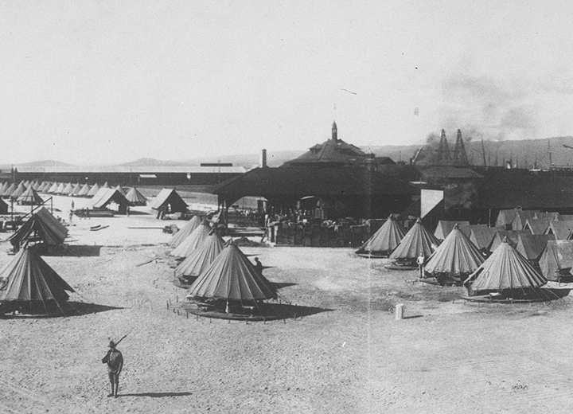

By the mid-1900s, Kakaʻako had become an industrial zone, filled with warehouses and factories rooted in its past as Honolulu's dumping ground. Despite the industrialization, the area retained the legacy of displaced immigrant communities and fishponds—some honored today in building names and the SALT complex, referencing the once-thriving salt flats of the region.
Photo credit: Hawaiʻi State Archives

Built in 1907 atop the filled-in Kaʻākaukukui reef, Fort Armstrong marked the militarization of a once-thriving landscape of fishponds, salt flats, and marshland. Established after Hawaiʻi's annexation, the fort symbolized U.S. control over the area until 1951, when President Truman returned the land to the Territory of Hawaiʻi. The name "Kaʻākaukukui," meaning "the right (or north) light," reflects the deep cultural roots that predated this transformation.
Photo credit: Hawaiʻi State Archives